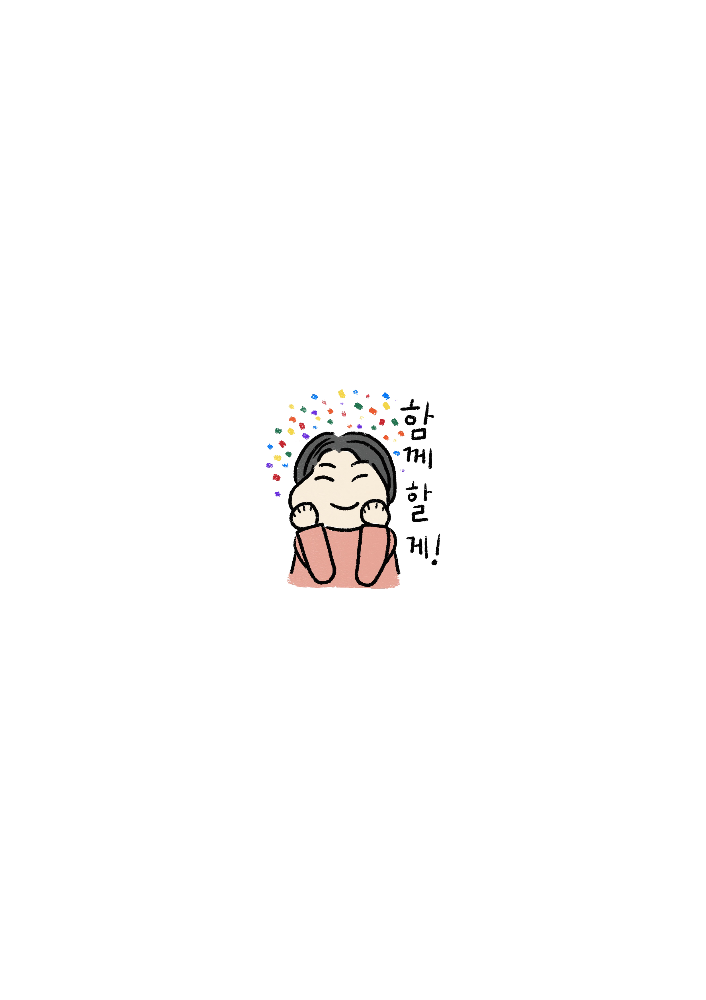
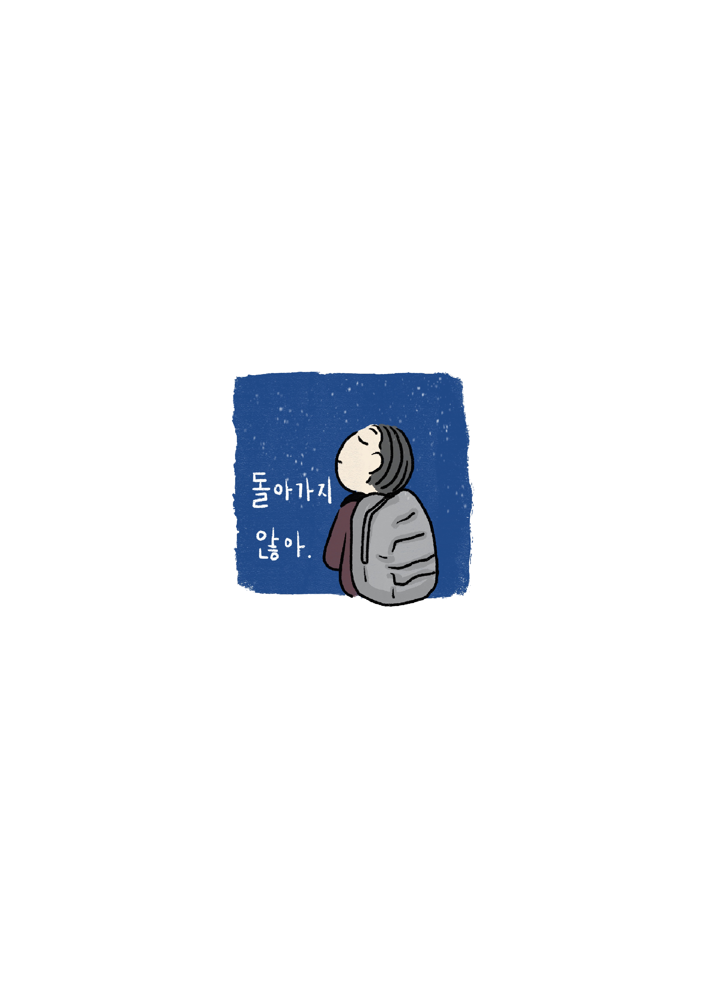

AM 06:50 - AM 08:40
-
매일 여행하는 마음으로 일상을 살아나가야겠다고 생각하곤
했다. 여행을 가서 과거나 미래를 고민하면 손해보는 느낌이다.
기껏 여행까지
와서 지난날에 대한 후회나 앞날에 대한 걱정만 갖고 끙끙대는 것만큼
미련한 짓도 없다. 삶은 순간의 합이므로 순간에 집중해야 한다고, 마치
여행하는 그 순간에 집중해야 나중가서 후회도 남지 않는 것처럼.
일상도 그래야한다고 생각하곤 했다. 그런데 요즘 들어 그렇게 살지
못했다. 아무래도 고시원이라는 공간 때문이다. 서울에 올라오기
전까지는 삶이 마치 무한히 이어진다고 믿는 사람처럼 하루하루를
낭비하듯 살아오지 않았나하는 후회. 그리고 앞으로 내가 이 고시원
방보다 넓은 크기의 거처를 경제면에서건 생활면에서건 책임지는 사람이
될 수 있을까 하는 막막함. 형광등 두 짝 중 한 짝에 불이 들어오지
않는 고시원 방에 누워 천장을 바라보고 있자면 그런 꽁한 마음들이
자꾸만 밀물처럼 밀려온다.
일상이 여행이라면 분명 고시원 방보다 넓은 크기의 공간을 ‘가질’
필요는 없다. 여행을 가는 길이건, 여행에서 돌아오는 길이건 짐이
많으면 골칫거리에 지나지 않는다. 서울에 올라와 고시원에 처음 살 때
일상을 비관하지 않은 이유도 공간을 많이 가져봐야 짐덩어리라는
생각이 바탕에 깔려 있었기 때문이다. 톨스토이의 단편 ‘사람에게는
얼만큼의 땅이 필요한가’에서 주인공 바흠이 끝내 갖게 된 땅의 크기는
그가 죽어서 뭍힌 2미터 남짓에 불과했다. 사람에게 딱 그만큼의 땅이
필요하다면 고시원 방으로 족하다. 그렇지만 동시에, 일상이 여행이라면
고시원 방보다 넓은 크기의 공간을 ‘누려야’ 마땅하다. 좁다란 방에
갖혀 여행지에서의 시간을 보내기는 억울하지 않은가. 내가 가질 필요는
없지만 내가 누릴 필요는 있는 시간의 집합. 그게 바로 여행일 테니까.
그래서인지 무리해서라도 거처를 옮겨야 하나 싶은 생각이 안에서부터
스멀스멀 올라온다. 이따금씩 퇴근하고 고시원 방에 돌아오면 내 방이
너무 쓸쓸해 보인다.
취미가 무엇이냐는 질문을 종종 받는다. 퇴근하고는 뭐하시냐고.
주말에는 뭐하시냐고. 그런 질문을 들을 때마다 그러게요, 제 취미는
뭘까요, 싶다. 퇴근하고는 방에 들어가 온몸에 힘을 빼고 송장처럼
침대에 눕는다. 기껏해야 자기 전에 팟캐스트를 듣는 정도. 잠이 솔솔
밀려올 때쯤 양압기를 코에 끼운다. 그렇게 잠에 든다. 다음날 아침
잠에서 깨면 세수하고 바로 출근한다. 사무실에 있는 시간이 길다.
그래도 사무실에는 누구라도 있고, 그 누구가 곁에 있고 없고의 차이가
내게 큰 영향을 끼친다. 고시원 방에 누워 있으면 요새는 사무치게
외로워서, 그래서 아무런 생각도 하지 않으려고 방에서 있는 시간의
대부분을 잠으로 채운다. 그마저도 한동안은 정말 사무치게 외로운 탓에
잠에 들기도 힘들었다. 생활에 대대적인 개편이 필요하다.
조금씩 일상을 다시 일으켜 세워야겠다. 산책도 자주 나가고, 오랜만에
명상도 해보고, 좋아하는 소설도 읽고. 그렇게 나를 다시 붙잡아야겠다.
지금처럼 파도치는 마음이 아니라, 잔잔하고 단단한 마음을 가졌으면
좋겠다. 어제는 2020년 젊은작가상 수상작품집에 실린 최은영의 단편
‘아주 희미한 빛으로도’를 읽었다. 사람이 자기 삶과 붙어있는 정도에
대해 생각할 거리를 남겨주는 단편이었다. 내가 내 삶과 적당한 거리를
유지했으면 좋겠다. 삶과 너무 붙어있는 나머지 절망하지 않으면서도,
자신을 너무나 타인처럼 대한 나머지 냉담해지지 않는 정도로. 그
거리를 유지하면서 조금씩 나은 사람이 됐으면 좋겠다. 나를 위해서,
내가 사랑하는 이들을 위해서.

